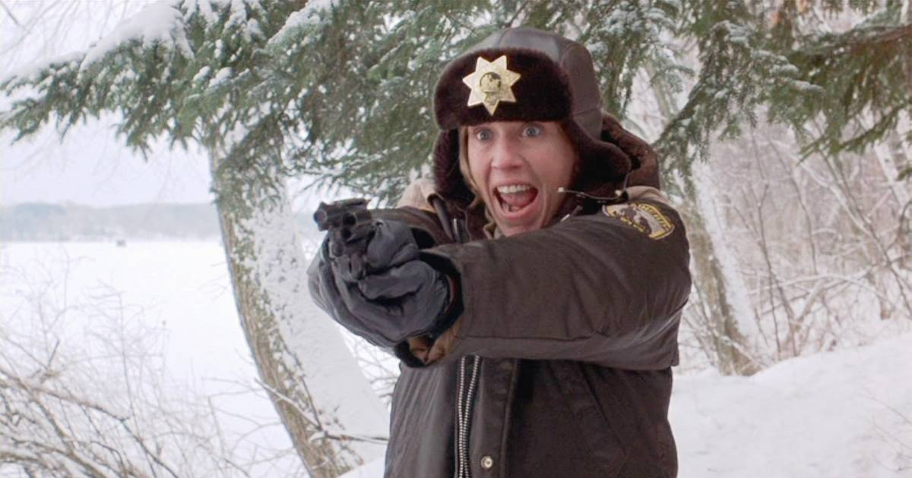

MARGE GUNDERSON
Chief of Police

Contact
(555) 123-4567 | marge.gunderson@email.com
Education
B.A. in Criminal Justice from University of Minnesota – Duluth, MN 1978
Professional Experience
Chief of Police
Brainerd Police Department – Brainerd, MN 1985 – Present
- Lead daily operations of the Brainerd Police Department, supervising officers and ensuring community safety.
- Conducted successful homicide and fraud investigations, including solving a multi-state kidnapping and murder case in cooperation with state and federal agencies.
- Developed a reputation for patient and empathetic interviewing techniques that yielded critical evidence.
- Implemented community engagement programs that increased trust between residents and law enforcement.
- Managed crisis response with level-headed judgment, preventing further harm and ensuring swift resolution.
Police Officer
Brainerd Police Department – Brainerd, MN
1978 – 1985
- Patrolled assigned areas to deter and detect criminal activity.
- Responded to emergency calls, conducted traffic stops, and enforced state and local laws.
- Built strong relationships with local residents to encourage community cooperation in investigations.
- Completed specialized training in crime scene investigation and evidence handling.
Skills
- Criminal Investigations & Forensics
- Leadership & Team Management
- Community Policing & Public Safety
- Crisis Negotiation & Conflict Resolution
- Evidence Collection & Case Documentation
- Cross-Agency Collaboration
Awards & Recognition
- Commendation for Bravery and Service, Minnesota Bureau of Criminal Apprehension (1990)
- “Officer of the Year,” Brainerd Police Department (1989)